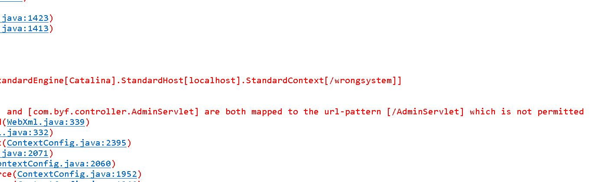

最直接也是最有效的办法：看console控制台

这是我看到的原因，我先想到是不是web.xml里的url-pattern里的命名是不是冲突
因为我在这个项目之前写了一个项目，用的是同一个tomcat，单个启动上一个项目是没有任何问题的，所以排除掉不是tomcat本身的问题
接下来，我在控制台上上看到这一行报错原因，因此判定是我的AdminServlet中有问题，因为考虑到修改映射，web.xml和@WebServlet配置一个就好，两个servlet类也不能相同，所以我将该类里的@WebServlet("/AdminServlet")注释掉
然后我再次运行，问题解决。
在这个解决问题的过程中，我还收集到以下几个原因，希望可以帮到需要的人
1.Tomcat对应的工作空间（如，Tomcat安装目录下webapps或者wtpwebapps）工程不存在，如上图所示。
解决方案：删除对应文件夹，重启Tomcat。
2.工程本身有报错或者工程引入jar包有问题
解决方案：如果是maven构建的，据说可以Run as->maven test，检查依赖的jar包有无问题